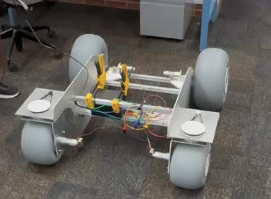

Cornell Nexus
I’ve led a software team of 10 members by assigning and overseeing individual tasks and collaborating with different subteams (mechanical, electrical) to design an autonomous robot that will collect microplastics from beaches. I’ve implemented the robot’s docking algorithm to return to its base station with Python, OpenCV library and April Tags. I’ve wrote the robot’s traversal algorithms in Python, allowing traversal to every waypoint (node) in any user-defined space. I’ve reviewed and debugged majority of code merged into main codebase through Github Pull Request Reviews.